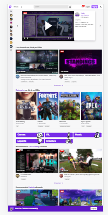
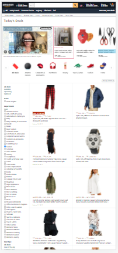

Visual Hierarchy
Twitch
twitch.tv The Visual Hierarchy guide the user to the most important element first, it place all element in order of importance or significance, as We can see on twitch our primary focus on this site is a giant video stream, the next visual thing we focus on is the series of video thumbnails, they are not playing and they are a bit smaller. the stillness and the size make these things less visually prominent that is the second thing in our visual Hierarchy and the last categories, these are even smaller, they are decreasing the size yet again; less visually prominent, and they are placed futher down on the page. this the third part of our Hierarchy.
Repetition
Amazon
amazon.com Define as an act or an instance of repeating, Repetition can be used to manage how user browse something, how they understand the design. Amazon site is a good example of repetition let's have a look at the products images, the prices, they tell whether it has a prime shipping, they repeat the same pattern over and over, because Amazon repeat these style it creates a vitual consistency that is really effective.
Rule of Thirds
Stripe
stripe.comEmpty space is not wasted, it is in fact good, it let the design to breathe, and breathing is essential for both designing for the web and sustaining human life. It is well demonstrated on the stripe site, there is a great balance on the page, the space between different thoughts, grouping, ideas, and the proximity between the elements that make up these grouping.